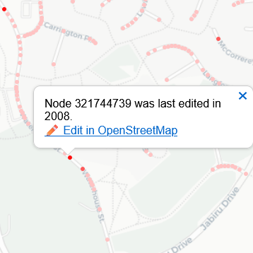

Have you ever wanted a list of all the public parks in your town? Or fast food restaurants in your country? Curious about the mysterious infrastructure down the road? Plotting fruit trees in your neighbourhood? OpenStreetMap may be of interest to you.
OpenStreetMap (OSM) is a non-proprietary crowd-sourced map of the world. Similarly to Wikipedia, anyone can edit it, and it is free to use commercially without obtaining an API key. Under the hood, it is a database containing structured geographic data about the world which can be plotted visually as a map.
Nearly any object of interest and its attributes can be stored and retrieved; be it physical (roads, buildings, forests, fire hydrants, waterways...) or conceptual (businesses, addresses, political borders, national parks, routes, landuse...).
Objects can be described, queried and visualised by attributes, such as their name, the intermittancy of a waterway, if a building is a garage, the voltage of a power line, and nearly anything else you can imagine.
OSM and its derivatives are commonly used as basemaps, for navigation and routing, visualising networks, accessibility, fitness and many other purposes. Most people use it quite often without realising.
Learn more about OpenStreetMap ➡️
Osmia provides some tools that help keep the data in OpenStreetMap complete and up-to-date. Check out the modules below and start mapping!
A screenshot of OpenStreetMap displayed in OSM-Carto style
Quality control tools greatly benefit map maintainers. The purpose of this tool is to find map features, in this case roads or paths, that have not been updated in a long time.
In most cases, roads in OSM are traced from aerial photography. Imagery providers occasionally permit data access to OSM mappers for tracing (ie. digitising) map features, especially roads and buildings. Imagery providers include Bing, ESRI and Government sources (especially in NSW and ACT and some councils in Brisbane).
Aerial imagery layers were not typically very spatially accurate or high resolution before 2020, in which Bing collected high quality and precisely georeferenced imagery for Microsoft Flight Simulator. Therefore we can assume that map features last edited before 2020 are likely to be inaccurate.
Osmia's Obsolete Road Geometry Tool detects and highlights geometry that is likely to be obsolete. Roads are linear features with vertices at the beginning, end and bends.
Road line geometry coloured by vintage
Road vertex geometry coloured by vintage
It is important for navigation, safety and accessibility to know if a road surface is paved or not.
Osmia's Missing Road Surfaces Tool detects and highlights road and path features that do not have a surface attribute associated. You can usually determine the surface from recent aerial imagery such as Bing. The generic way of tagging a surface is using the key/value combination surface=paved or surface=unpaved. However, if you wish you can be more specific by listing the surface material, such as surface=asphalt or surface=concrete. If you are unable to determine the surface confidently (eg. in tree-covered areas), best ignore it. You may refer to the OpenStreetMap Wiki for typical tag combinations.
highway=path or highway=track are drawn with a dashed line. This is because in Australia these roads are usually implied to be unpaved already, so generally it is not a priority to tag them with a surface (though you are welcome to). surface; this allows you to load them directly into OpenStreetMap. Simply drag the GeoJSON file into the editor window.
Launch the Tool
Road geometry without surface tags are highlighted
There is a wealth of open data available for mapping on the internet. However integrating open data into OpenStreetMap has its challenges.
OpenStreetMappers can use a variety of Open Data sources to integrate data into the OSM database if the data custodian has given permission. Creative Commons data sources can be used in OpenStreetMap, but they require a waiver to abide by the terms of the Open Database Licence (ODbL).
Some data custodians have generously provided this, such as the Government of South Australia, but unfortunately have not served the data in a format that is interoperable with the OSM online editor "iD". Using web services such as XYZ (ie. TMS) and WMS layers are easy, however providing raw vector data such as GeoJSON and Shapefiles are not unless they are very small filesize.
Osmia has received a useful dataset from the Government of South Australia that is ready to be manually integrated into OpenStreetMap, however it needs to be served as a web service. This tool provides a preview of the dataset that is running on this host server's Geoserver instance. You can view the preview below and use it directly in OpenStreetMap online editor by following the WMS or TMS links provided. Osmia has constructed the request URLs so you don't have to!
The dataset in question shows landuse polygons at a block/cadastre level. Osmia has stylised this with intuitive colours and labels. It is useful for mappers to find unmapped reserves, or realign existing polygons to the official lot boundaries. Enjoy mapping South Australia!
Launch the ToolA screenshot of the SA Land use with Osmia SLD style